Products
Electronic and magnetic neon power supplies, electrodes, tubing, tools and sign accessories.
Electronic Neon Power Supplies
Energy-saving electronic power supplies for neon and cold cathode signs.
UL listed · 120V · North America

CE certified · 220–240V · Europe
 CE certified, 20mA220–240V input · 20mA · 3–12kV · CE (EMC & LVD)
CE certified, 20mA220–240V input · 20mA · 3–12kV · CE (EMC & LVD) CE certified, 40mA220–240V input · 40mA · 6–8kV · CE (EMC & LVD)
CE certified, 40mA220–240V input · 40mA · 6–8kV · CE (EMC & LVD)Standard · 220–240V
 Standard, 30mA220–240V or 120V input · 30mA · 3–12kV
Standard, 30mA220–240V or 120V input · 30mA · 3–12kV Low output 3kV, 230V / 110V / 12V input230V, 110V or 12V DC input · 30mA · 3kV
Low output 3kV, 230V / 110V / 12V input230V, 110V or 12V DC input · 30mA · 3kV DC output, 12–15kV230V input · 30mA · 12–15kV DC output
DC output, 12–15kV230V input · 30mA · 12–15kV DC output High-voltage AC output230V input · 30mA · 7.5–10kV
High-voltage AC output230V input · 30mA · 7.5–10kV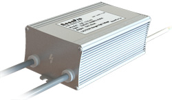
Metal case, 40mA220–240V input · 40mA · 12–15kV Extra power, 40mA220–240V input · 40mA · 7.5–10kV
Extra power, 40mA220–240V input · 40mA · 7.5–10kV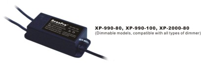
Cold cathode, 990–2000V230V input · 40–100mA · 990–2000V Built-in dimmer, flasher & effectsDimming, flashing, fade in/out, writing, scripting
Built-in dimmer, flasher & effectsDimming, flashing, fade in/out, writing, scriptingMagnetic Neon Transformers
Traditional coil-and-core neon transformers for indoor and outdoor signs.
Neon Electrodes
Neon and cold cathode tube electrodes in lead, lead-free and Pyrex glass.
Neon Tubing
Powder-coated, cold cathode and colour glass tubing.
Neon Tools & Equipment
Equipment for making, testing and controlling neon signs.
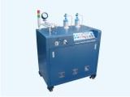
Vacuum systemFor neon tube processing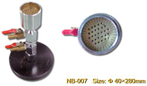
Burners & hand torchesHand torches, cannon fire & ribbon burners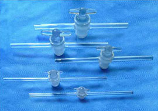
Glass stopcocksLead glass, for neon vacuum systems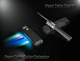
Testing toolsTube tester, colour detector, length meter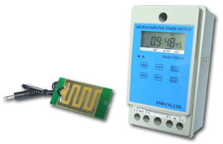
Microcomputer timer switchProgrammable timer with rain sensorNeon Accessories & Supplies
Gases, cable, covers, supports and other sign-making supplies.
 Rare gasesNeon, argon & mixed gases · 1.25–2.65L
Rare gasesNeon, argon & mixed gases · 1.25–2.65L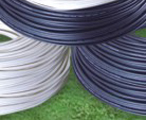
HT cableSilicone & PVC high-tension cable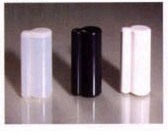
Electrode coversSilicone & PVC sleeves and end caps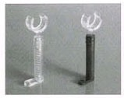
Tube supportsPolycarbonate & glass tube supports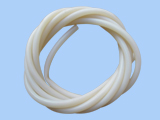
MiscellaneousTubing cutters, latex tubing, mica, mercury & more